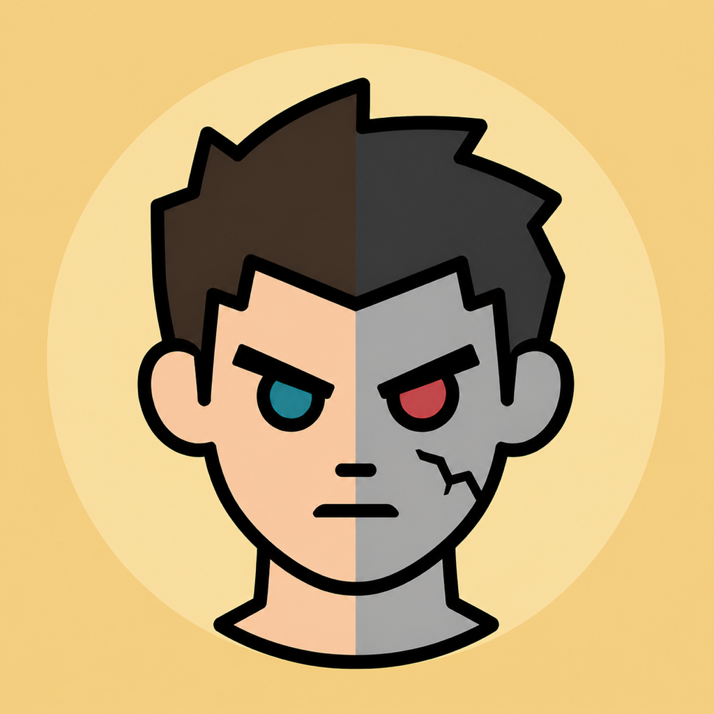

Bluetooth Low Energy discovers rotating game tickets. Supported iPhones may use Ultra Wideband to calculate a private distance band during an active session.
Stay human. Keep your distance.
Close Contact
A cartoon zombie survival game for iPhone. The server decides who starts as a Survivor and who starts Infected. If a confirmed encounter takes a Survivor to zero health, infection happens automatically. You choose when to play. You do not choose your side, and infection is not optional.

A monthly outbreak in the world around you
Each month starts a new numbered Game. The server seeds about 10% of active players as Infected and may add a few regional seeds. New accounts normally begin as Survivors. The exception is a valid invite, which automatically gives a recruit the inviter's current side. No one picks a side or switches voluntarily. During play, a Survivor becomes Infected as soon as a server-confirmed encounter takes their health to zero. Survivors earn Valor for eligible Hunt time, safe walking, takedowns, and qualified referrals. Infected players earn Dread for damage, conversions, safe walking, and qualified referrals. Everyone appears on the monthly and lifetime boards, even with a score of zero.
Weapons and armor have fixed Scrap prices and defined effects. Sense and revive items are still test previews and are not ready for release. There are no loot boxes or randomized purchases.
The source includes factions, shared stats, and a new numbered Game each month, but those online flows still need production testing. Lifetime scores, Scrap, and permanent gear are designed to carry into the next Game.
Close enough to play, private enough to walk away
Nearby devices are designed to exchange short-lived tickets instead of callsigns, account IDs, or routes. The production flow uses broad count and danger bands, pauses combat inside two meters, and requires server confirmation before any reward. It may send a few rounded phone-to-phone distance samples to verify an encounter. Those samples are not map locations. Final network and two-iPhone testing still need to verify these protections.
Privacy Policy
Effective August 26, 2026
This Privacy Policy explains how Close Contact, developed by Richard Lavey, processes information when you use the Close Contact iPhone application. Close Contact is being prepared for a United States release and is not an emergency, navigation, or personal-safety service.
1. Account and Profile Information
The planned production account flow uses Sign in with Apple and Firebase Authentication. Apple can provide a stable account identifier and, only if you choose to share them, your name and email address. You may use Apple's Hide My Email feature. Close Contact does not receive your Apple Account password. The current tester build uses a local test profile instead.
When the production service is deployed, it is designed to store the account and game data needed to run Close Contact. That includes your callsign, assigned role, account and public game identifiers, scores, health, Scrap, inventory, referrals, faction membership, and Game participation. In the current source, safety acknowledgements and ordinary preferences stay on the device.
2. Nearby Interaction and Bluetooth
During a Hunt Session you explicitly start, Close Contact uses Bluetooth Low Energy to discover other participating devices and exchange rotating anonymous encounter tickets. On supported iPhones, Close Contact may use Ultra Wideband through Apple's Nearby Interaction framework to determine a local distance band. Raw Bluetooth identifiers, Ultra Wideband discovery tokens, the continuous ranging stream, and direction stay on the device and are discarded when the Hunt Session ends.
Nearby devices do not receive your callsign, Apple identifier, email address, route, or precise location. Presence can appear as a broad role count such as 1–2, 3–9, or 10+. To verify mutual play and prevent duplicate rewards, the service may receive expiring encounter proofs, short timestamps, and a few rounded measurements of the distance between the two participating phones. Those measurements are not geographic coordinates and do not create a route. Radio contact or a disconnect by itself does not award points or penalize either player.
3. Motion, Location, and Travel
If you grant permission, Close Contact uses motion activity, step-distance data, and location-derived speed only during a user-visible Hunt Session to pause play at unsafe or vehicle speeds, reject implausible movement, and count eligible pedestrian travel. Precise coordinates, routes, raw locations, and motion samples are not sent to the game server or stored in your account.
The service may receive an eligible pedestrian-distance total for travel rewards. Once the outbreak-region feature is connected, it may also receive a coarse region identifier for monthly infection seeding. The current tester build does not derive or upload a real outbreak region. The server rejects submissions that contain coordinates or routes. Travel and combat rewards pause when required safety signals are unavailable.
4. Gameplay, Referrals, Factions, and Leaderboards
In production, Close Contact is designed to receive brief session check-ins and the limited mutual evidence needed to settle encounters. The server, not either phone, is designed to control lasting game state, rewards, purchases, combat, monthly resets, and ranks. This path exists in source but still needs deployed staging and device verification.
Referral invites use expiring tokens, while faction invites use private, hard-to-guess codes. Creation and pasted-token redemption exist in the iPhone source but have not been tested against a deployed staging service. Universal Links are not connected, so recruits currently paste a link or token during onboarding. A valid referral automatically assigns the inviter's current side, with no role picker or confirmation step, and rewards remain server-qualified. Public leaderboards show a callsign, score, rank when available, and finalized end-of-Game fields. They do not show a player's current role or faction. Faction members see shared scores and an assigned role only when that member opts in. They do not receive live presence, routes, device identifiers, encounter partners, or exact location.
5. Live Activities and Notifications
While a Hunt Session is active, a Live Activity may show your role, health, armor, safety-paused status, Game number, and broad Survivor and Infected count bands on the Lock Screen or Dynamic Island. It does not show nearby callsigns, exact distance, direction, or precise location. A Hunt Live Activity ends after the session or Apple's system duration limit.
The current tester build does not request notification permission or store a messaging token. If notifications are added before release and you choose to allow them, the production service may store a Firebase Cloud Messaging token for regeneration, monthly-results, faction, invite, or safety updates. You will be able to change notification permission in iOS Settings.
6. Purchases and Advertising
The initial release uses only earned in-game Scrap. Close Contact has no loot boxes, random paid rewards, third-party advertising, advertising identifier, cross-app tracking, or sale of personal information. If real-money purchases are added later, this policy and the App Store disclosures will be updated before that feature becomes available.
7. Service Providers and Processing
The production version is designed to use Google Firebase for authentication, cloud storage, server logic, abuse prevention, and service reliability. Push delivery may also use Firebase if notifications are added. That production environment has not been deployed yet. Once connected, Firebase may process account identifiers, technical device information, operational logs, and diagnostics needed to provide and secure those services. Learn more in Firebase's privacy and security documentation.
8. Retention and Account Deletion
Game data is retained while your account is active and as needed to maintain seasons, leaderboards, currency ledgers, security, and legal obligations. The app also keeps a local game snapshot in its protected sandbox so the interface can resume after relaunch.
Close Contact is still in testing, and the current tester build does not create a production cloud account. The production source includes a server-backed deletion action, but it still needs end-to-end staging verification. Cloud data export is not connected yet; the current export contains only the snapshot stored on the phone. A completed deletion request is designed to remove the authentication account, private profile, inventory, faction membership, and other account-linked operational data. A one-way deletion-integrity marker may be kept so delayed work cannot recreate a deleted account, but it cannot recover the former identifier. Limited encrypted backups may remain temporarily until the provider overwrites them.
9. Security and Integrity
The production design uses authenticated connections, Firebase App Check with Apple App Attest, database rules that deny direct writes, rotating encounter tickets, retry-safe server events, and server-calculated game state. These controls still require deployment and real-device testing before release. No service can guarantee absolute security. Report suspected account compromise or a privacy issue using the support contact below.
10. Children's Privacy
Close Contact is not directed to children under 13 and does not knowingly collect personal information from a child under 13. The game includes mild cartoon horror and simulated combat. Apple will determine the final age rating from the App Store questionnaire before release. If you believe a child has provided information, contact the developer for review and deletion.
11. United States Availability and International Processing
The app is planned for the United States App Store only. Richard Lavey and service providers may still process information in the United States and other countries where they operate, which may have different data-protection laws.
12. Changes to This Policy
This policy may be updated when features, service providers, or legal requirements change. The effective date above will be revised, and additional in-app notice will be provided when required.
13. Contact
For privacy questions, account-deletion assistance, or a safety concern, email rclavey415@gmail.com.
Safety Rules
Close Contact is a game, not permission to touch, chase, follow, surround, threaten, restrain, or block another person. Stay aware, obey all laws and property rules, keep your phone down while moving, and stop immediately when anyone asks for space. Never play while driving or at an unsafe speed.
The production design pauses scoring inside the two-meter buffer and when movement appears unsafe, but those controls still need real-device verification. Radio and motion signals can be delayed, blocked, or unavailable, so treat every distance or count as approximate. Disconnecting or closing the app never justifies physical pursuit and does not create an automatic penalty.
Community Guidelines
Do not use a callsign or faction name for harassment, hate speech, threats, sexual or exploitative material, impersonation, spam, disclosure of personal information, or encouragement of illegal or dangerous activity. Reporting and blocking controls are present in the current source, but production moderation and real-device testing are not finished. Until that work is complete, this tester build should be used only with people you know and trust. For immediate danger, leave the game and contact local emergency services.
Support
For help, feedback, account-deletion assistance, or a safety concern, email rclavey415@gmail.com. Include your iPhone model, iOS version, and a short description of what happened. Do not email passwords, precise locations, encounter identities, or other sensitive information.